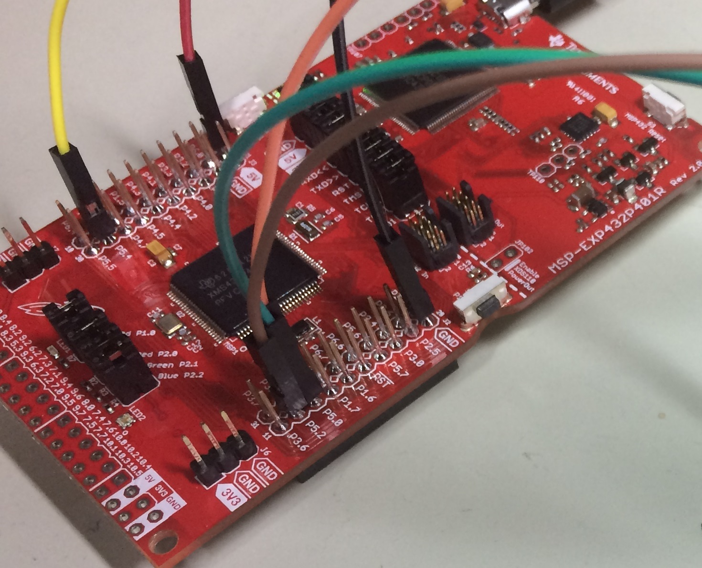
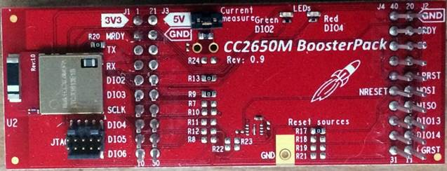
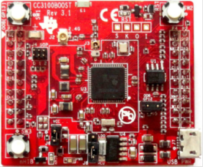
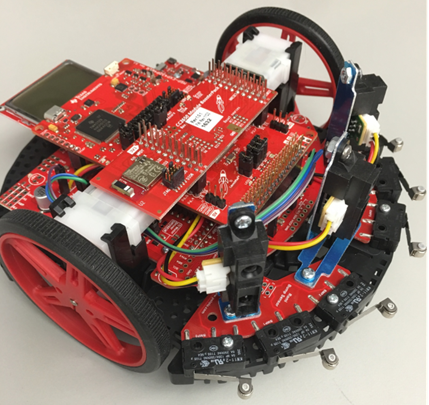
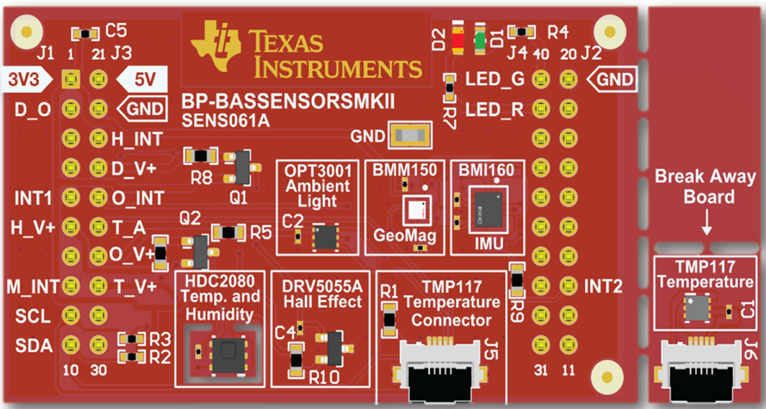
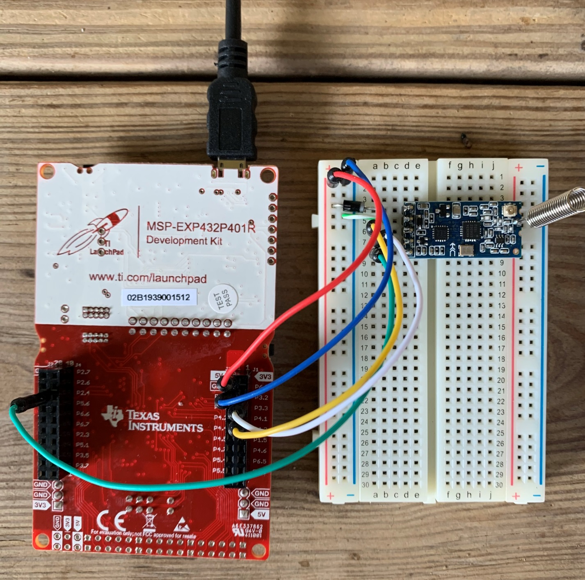
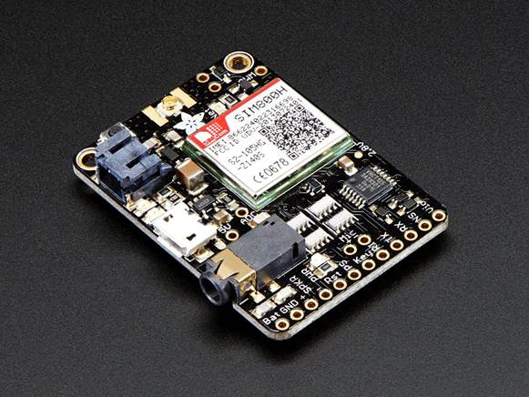

Sept 2, 2021
- Author
- Jonathan Valvano, PhD
-
Daniel Valvano, BS
Overview
- Internet of Things (IoT) is ubiquitous in the computing world. Connected devices allow remote data acquisition, distributed processing, and remote actuation. The focus of this class will be low-level technology to implement IoT devices. By exposing fundamental operational behavior, students, when facing a design problem, will be empowered to either select an appropriate existing technology, or to develop new technologies.
- Each category will begin with fundamental operational theory. The second step will be to present reference designs that utilize the technology. The third step will be able to evaluate performance, such as electrical power, computational performance, communication bandwidth, system reliability, and network diameter. The course will discuss similarities and differences in the technologies. The course will conclude with an open-ended and interactive discussion of future trends in IoT.
Hardware
- The hardware used in these projects include
- MSP432 LaunchPad (MSP-EXP432P401R)
- RSLK Max (TIRSLK-EVM)
- CC3100 BoosterPack (CC3100BOOST)
- CC2650 BoosterPack (BOOSTXL-CC2650MA)
- CC2650 LaunchPad (LAUNCHXL-CC2650)
- Educational BoosterPack MKII (BOOSTXL-EDUMKII)
- Building Automation Sensor (BP-BASSENSORSMKII)
- Adafruit FONA Cellular Module 2G (obsolete)
- Seeed HC12 (SKU 113990039)
These project utilize the MSP432 LaunchPad. For more information see
https://www.ti.com/tool/MSP-EXP432P401R

The CC2650 implements Bluetooth Low Energy. For more information see
https://www.ti.com/tool/LAUNCHXL-CC2650
and https://www.ti.com/tool/BOOSTXL-CC2650MA

The CC3100 implements wifi. For more information see
https://www.ti.com/tool/CC3100BOOST

The RSLK Max is a full-featured robot platform, shown here with CC2650. For more information see
https://www.ti.com/tool/TIRSLK-EVM
https://training.ti.com/ti-robotics-system-learning-kit-max
and https://university.ti.com/en/faculty/ti-robotics-system-learning-kit/ti-rslk-max-edition-curriculum

The Building Automation Sensor BP-BASSENSORSMKII includes a wide range of sensors. The booster includes TMP117 Temperature, HDC2080 Temperature/Humidity, OPT3001 Light intensity, DRV5055A Hall Effect, and BMI160/BMM150 9-axis IMU. For more information see
https://www.ti.com/tool/BP-BASSENSORSMKII

The Educational BoosterPack MKII is simple platform with lots of I/O, shown here with the CC2650 BoosterPack. For more information see
https://www.ti.com/tool/BOOSTXL-EDUMKII
The Seeed HC12 implements subGHz IEEE 15.4 communication, shown here connected to the MSP432 LaunchPad. For more information see
https://www.seeedstudio.com/433Mhz-Wireless-Serial-Transceiver-Module-1-Kilometer-p-1733.html

Adafruit FONA Cellular Module 2G can send and receive SMS text messages. For more information see
https://www.adafruit.com/product/1946

Modules
- The documentation is divided into modules.
- MSP432 contains the MSP432 peripherals
- BLE contains Bluetooth Low Energy Application Processor with CC2650
- RSLK describes software for the TI-RSLK MAX robot
- BP-BASSENSORSMKII describes software for the Building Automation Sensors BoosterPack
- MKII describes software for the Educational BoosterPack MKII
- Math contains math functions, TExaS scope, and logic analyzer
- Fona describes software for the Adafruit FONA Cellular Module 2G